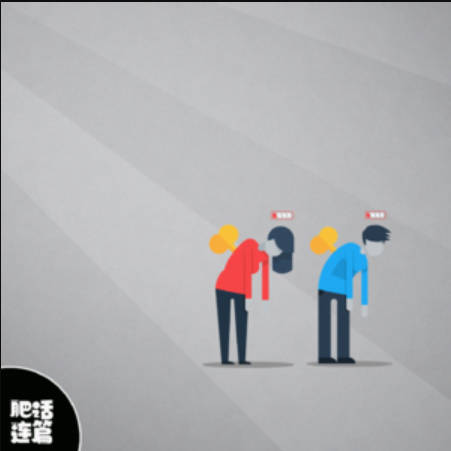

Vol.45：制造仪式感
Hello，欢迎阅读我的周刊第 45 期。
本期主要是一些日常记录。
1.生日仪式感。今年生日决定给自己好好的拍一次生日照。为什么要拍呢？因为我想记住每年生日是怎么过的，我相信照片能帮我记录下来。现在回想去年的生日，却一点印象都没有，只是猜测那天应该是出去店里吃了顿饭，但其他的就没有任何记忆了。所以，今年我就提前安排了生日该怎么过，一大重点就是拍生日照，先找了一些照片案例，还提前买了粉色衬衫和白色裙子。周末下雨，两个人宅在家布置，一起打气球，贴气球，然后贴了掉，掉了又贴🤣。 想想好像从来没有自己安排过生日怎么过，小时候大多数生日都是家人给我做一顿好吃的，十岁生日会办一次大的酒席，大学过生日都是在学校，会和室友一起出去吃顿火锅，然后回到寝室还有大家买的蛋糕，非常幸福。自从毕业后，对生日就没有什么感觉了，但今年，突然想搞一点仪式感，于是给自己安排了一场在家拍的生日照。幸运的是有人愿意陪着过，给我买道具，一起布置，一起拍照，于是有了一个难忘的生日。
2.直到世界尽头中文版。单曲循环一晚上的歌，第一次听就被陈楚生的嗓音迷住了。这是陈楚生和他们那一届快乐男生一起演唱的一首歌，每个人的表演都非常投入，隔着屏幕看也能感染到我，真羡慕那些在现场看的观众。
3.抢票的一个月。三年过去了，娱乐活动又回来了，人们的热情甚至比以前更高了，演唱会门票需要抢，国庆出游的票需要抢。
4.极简日记。一个以时间轴形式来记录生活日常的 APP，支持编写文字、插入图片、标记心情、标签分类和星级评分。

5.碎片时间避免盲目刷手机，可以做的尝试：清理收藏。趁着空隙时间，清理曾经在各个平台中收藏的内容，有价值的整理到一起，没有价值的就取消收藏。
6.Blender 教程。曾经跟着甜甜圈教程学过一段时间 Blender，但由于后来没有机会用到，就又忘光了。现在的工作是设计 3D 建模软件，所以想重新学一遍 Blender，下面这两个教程是我觉得比较好的。第一个，Blender 零基础完全入门手册，在案例中穿插使用最常用的建模工具和各种修改器，学得不枯燥，再结合 Blender 官方文档，会记得更扎实。
https://www.bilibili.com/video/BV14u41147YH?p=1&vd_source=6546622e168eb1d92cd784a5dac6cfa6

另一个教程 Introduction to Blender Series - For Absolute Beginners，更是在第一节就让你学会放轻松，以最简单的方式让人投入进去。
原视频：https://www.youtube.com/playlist?list=PLgO2ChD7acqH5S3fCO1GbAJC55NeVaCCp
搬运：https://www.bilibili.com/video/BV12T4y197Z5/?p=2&vd_source=6546622e168eb1d92cd784a5dac6cfa6
7.无聊怎么办，请听「肥话连篇」最新一期的播客。
https://www.xiaoyuzhoufm.com/episode/6510325e96875579711f23ad 
订阅： 本站所有内容首发于 tangweijuan.com，支持 RSS 订阅，同步更新于微信公众号「Afterwork Time」，欢迎扫描下方二维码订阅。